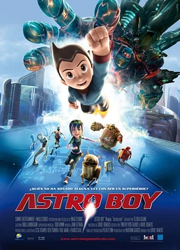

Creado a imagen y semejanza del hijo de un científico, un niño robot con superpoderes busca su lugar en un mundo hostil. Pero cuando una amenaza colosal acecha la ciudad, una sombra del pasado reaparece para destruirlo...
David Bowers
GuiónTimothy Hyde Harris y David Bowers
Reparto PrincipalFreddie Highmore